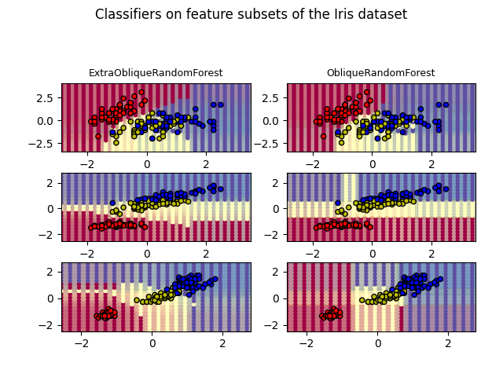

Note
Go to the end to download the full example code
Compare the decision surfaces of oblique extra-trees with standard oblique trees#
Plot the decision surfaces of forests of randomized oblique trees trained on pairs of features of the iris dataset.
This plot compares the decision surfaces learned by a oblique decision tree classifier (first column) and by an extra oblique decision tree classifier (second column). The purpose of this plot is to compare the decision surfaces learned by the two classifiers.
In the first row, the classifiers are built using the sepal width and the sepal length features only, on the second row using the petal length and sepal length only, and on the third row using the petal width and the petal length only.
ExtraObliqueRandomForest with 50 estimators with features [0, 1] has a score of 0.9
ObliqueRandomForest with 50 estimators with features [0, 1] has a score of 0.9066666666666666
ExtraObliqueRandomForest with 50 estimators with features [0, 2] has a score of 0.9933333333333333
ObliqueRandomForest with 50 estimators with features [0, 2] has a score of 0.98
ExtraObliqueRandomForest with 50 estimators with features [2, 3] has a score of 0.9866666666666667
ObliqueRandomForest with 50 estimators with features [2, 3] has a score of 0.9933333333333333
import matplotlib.pyplot as plt
import numpy as np
import pandas as pd
from matplotlib.colors import ListedColormap
from sklearn.datasets import load_iris
from sklearn.tree import DecisionTreeClassifier
from sktree import ExtraObliqueRandomForestClassifier, ObliqueRandomForestClassifier
# Parameters
n_classes = 3
n_estimators = 50
max_depth = 10
random_state = 123
RANDOM_SEED = 1234
models = [
ExtraObliqueRandomForestClassifier(n_estimators=n_estimators, random_state=random_state),
ObliqueRandomForestClassifier(n_estimators=n_estimators, random_state=random_state),
]
cmap = plt.cm.Spectral
plot_step = 0.01 # fine step width for decision surface contours
plot_step_coarser = 0.25 # step widths for coarse classifier guesses
plot_idx = 1
n_rows = 3
n_models = len(models)
# Load data
iris = load_iris()
# Create a dict that maps column names to indices
feature_names = dict(zip(range(iris.data.shape[1]), iris.feature_names))
# Create a dataframe to store the results from each run
results = pd.DataFrame(columns=["model", "features", "score (sec)", "time"])
for pair in ([0, 1], [0, 2], [2, 3]):
for model in models:
# We only take the two corresponding features
X = iris.data[:, pair]
y = iris.target
# Shuffle
idx = np.arange(X.shape[0])
np.random.seed(RANDOM_SEED)
np.random.shuffle(idx)
X = X[idx]
y = y[idx]
# Standardize
mean = X.mean(axis=0)
std = X.std(axis=0)
X = (X - mean) / std
# Train
model.fit(X, y)
scores = model.score(X, y)
# Create a title for each column and the console by using str() and
# slicing away useless parts of the string
model_title = str(type(model)).split(".")[-1][:-2][: -len("Classifier")]
model_details = model_title
if hasattr(model, "estimators_"):
model_details += " with {} estimators".format(len(model.estimators_))
print(model_details + " with features", pair, "has a score of", scores)
plt.subplot(n_rows, n_models, plot_idx)
if plot_idx <= len(models):
# Add a title at the top of each column
plt.title(model_title, fontsize=9)
# Now plot the decision boundary using a fine mesh as input to a
# filled contour plot
x_min, x_max = X[:, 0].min() - 1, X[:, 0].max() + 1
y_min, y_max = X[:, 1].min() - 1, X[:, 1].max() + 1
xx, yy = np.meshgrid(np.arange(x_min, x_max, plot_step), np.arange(y_min, y_max, plot_step))
# Plot either a single DecisionTreeClassifier or alpha blend the
# decision surfaces of the ensemble of classifiers
if isinstance(model, DecisionTreeClassifier):
Z = model.predict(np.c_[xx.ravel(), yy.ravel()])
Z = Z.reshape(xx.shape)
cs = plt.contourf(xx, yy, Z, cmap=cmap)
else:
# Choose alpha blend level with respect to the number
# of estimators
# that are in use (noting that AdaBoost can use fewer estimators
# than its maximum if it achieves a good enough fit early on)
estimator_alpha = 1.0 / len(model.estimators_)
for tree in model.estimators_:
Z = tree.predict(np.c_[xx.ravel(), yy.ravel()])
Z = Z.reshape(xx.shape)
cs = plt.contourf(xx, yy, Z, alpha=estimator_alpha, cmap=cmap)
# Build a coarser grid to plot a set of ensemble classifications
# to show how these are different to what we see in the decision
# surfaces. These points are regularly space and do not have a
# black outline
xx_coarser, yy_coarser = np.meshgrid(
np.arange(x_min, x_max, plot_step_coarser),
np.arange(y_min, y_max, plot_step_coarser),
)
Z_points_coarser = model.predict(np.c_[xx_coarser.ravel(), yy_coarser.ravel()]).reshape(
xx_coarser.shape
)
cs_points = plt.scatter(
xx_coarser,
yy_coarser,
s=15,
c=Z_points_coarser,
cmap=cmap,
edgecolors="none",
)
# Plot the training points, these are clustered together and have a
# black outline
plt.scatter(
X[:, 0],
X[:, 1],
c=y,
cmap=ListedColormap(["r", "y", "b"]),
edgecolor="k",
s=20,
)
plot_idx += 1 # move on to the next plot in sequence
plt.suptitle("Classifiers on feature subsets of the Iris dataset", fontsize=12)
plt.axis("tight")
plt.tight_layout(h_pad=0.2, w_pad=0.2, pad=2.5)
plt.show()
# Discussion
# ----------
# This section demonstrates the decision boundaries of the classification task with
# ObliqueDecisionTree and ExtraObliqueDecisionTree in contrast to basic DecisionTree.
# The performance of the three classifiers is very similar, however, the ObliqueDecisionTree
# and ExtraObliqueDecisionTree result in distinct decision boundaries.
Total running time of the script: (0 minutes 31.405 seconds)
Estimated memory usage: 2370 MB